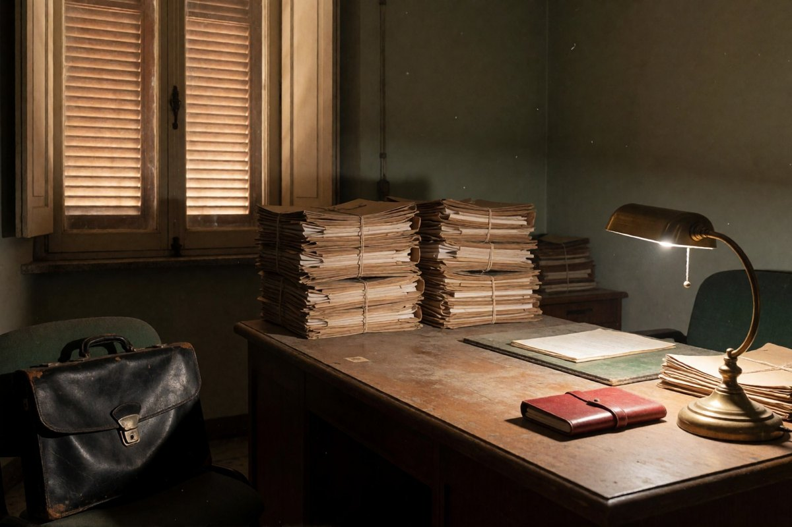

Cronaca · 12 novembre 2026
Agenda rossa, perquisizioni all'ex capo della Polizia De Gennaro

La Procura di Caltanissetta, che indaga ancora sulle stragi del 1992, ha perquisito Gianni De Gennaro, alcuni suoi collaboratori e il pentito Salvatore Contorno. I magistrati precisano: non è indagato per strage.
di Franco Zanghì
Il 12 novembre 2026 la Procura di Caltanissetta ha disposto perquisizioni nei confronti dell'ex capo della Polizia Gianni De Gennaro, di alcuni suoi strettissimi collaboratori e del collaboratore di giustizia Salvatore Contorno. Lo ha reso noto l'ANSA la sera stessa.
In una lunga nota i magistrati hanno messo nero su bianco un punto: De Gennaro non è indagato per strage. È una precisazione che non esclude, scrive l'ANSA, che il suo nome compaia nel registro degli indagati per altre ipotesi di reato, che potrebbero riguardare il depistaggio delle indagini sugli attentati del 1992. Sono ipotesi tutte da dimostrare, e fino a sentenza definitiva vale la presunzione d'innocenza.
Che cosa sostengono i magistrati
Secondo la nota della Procura, «sin dai primi accertamenti si è registrata una apparentemente ingiustificata preoccupazione» da parte di De Gennaro: sia per l'indagine, in parte resa nota nel settembre 2023 con le perquisizioni ai familiari dell'ex capo della Squadra mobile di Palermo Arnaldo La Barbera, sia per l'andamento del processo sul depistaggio in corso al Tribunale di Caltanissetta.
I pm sostengono inoltre che De Gennaro si sarebbe adoperato, servendosi dell'addetto alla sua tutela e di un altro collaboratore, per impedire a Salvatore Contorno di rendere dichiarazioni ai magistrati nisseni. E che, attraverso una sua ex collaboratrice in servizio al Dis, il dipartimento che coordina i servizi di informazione, avrebbe nascosto documentazione sull'arresto di Contorno, poi recuperata dai carabinieri.
Da dove parte l'indagine
Gli accertamenti, formalmente a carico di ignoti, partono da due vicende antiche. La prima è l'arresto di Contorno, avvenuto in Sicilia nel 1989 in circostanze mai del tutto chiarite: era tornato sull'isola armato, secondo la ricostruzione riportata dall'ANSA, per colpire i rivali corleonesi. Il blitz lo condusse la Squadra mobile guidata da La Barbera; il Nucleo centrale anticrimine della Polizia, allora, era guidato da De Gennaro. La seconda sono le lettere anonime del cosiddetto «corvo di Palermo», che precedettero l'attentato dell'Addaura contro Giovanni Falcone.
Per i magistrati sono fatti imprescindibili per ricostruire le stragi del 1992.
La borsa e l'agenda
C'è poi l'agenda rossa di Paolo Borsellino, sparita dopo la strage di via D'Amelio del 19 luglio 1992 e mai più ritrovata. Le indagini dei pm nisseni, riferisce l'ANSA, avrebbero ricostruito tutti i passaggi della borsa del giudice: sarebbe finita nell'ufficio di La Barbera poco dopo l'attentato, senza che venisse redatto alcun verbale, e lì sarebbe rimasta probabilmente fino ai primi di novembre del 1992, quando venne per la prima volta formalmente repertata.
Sarebbe inoltre documentata l'appartenenza alla massoneria di Giovanni Tinebra, allora procuratore di Caltanissetta. Secondo l'ipotesi dei magistrati, La Barbera sarebbe stato il regista di quello che una sentenza ha definito il più clamoroso depistaggio della storia repubblicana, e con Tinebra avrebbe avallato una ricostruzione minimalista dell'attentato per coprire soggetti esterni a Cosa nostra. La Barbera e Tinebra sono morti e non possono difendersi.
Il punto
Trentaquattro anni dopo via D'Amelio, lo Stato sta ancora indagando su se stesso. È giusto farlo, e farlo fino in fondo. Ma proprio per questo servono prudenza e rispetto: De Gennaro non è indagato per strage, le perquisizioni non sono condanne, e un servitore dello Stato con la sua storia ha diritto di spiegare e di difendersi come chiunque altro. La verità su Borsellino non arriverà né dai processi in piazza né da altri trent'anni di silenzi.
Fonti
- ANSA, «L'agenda rossa di Borsellino, perquisizioni all'ex capo della Polizia De Gennaro», 12 novembre 2026
- Nota della Procura della Repubblica di Caltanissetta, 12 novembre 2026, citata dall'ANSA
Le ricostruzioni riportate sono ipotesi di accusa in una indagine preliminare. Gianni De Gennaro, come precisato dalla stessa Procura, non è indagato per strage; per ogni persona citata vale la presunzione d'innocenza fino a sentenza definitiva. Versione scritta della notizia uscita sui canali dell'autore il 13 novembre 2026.